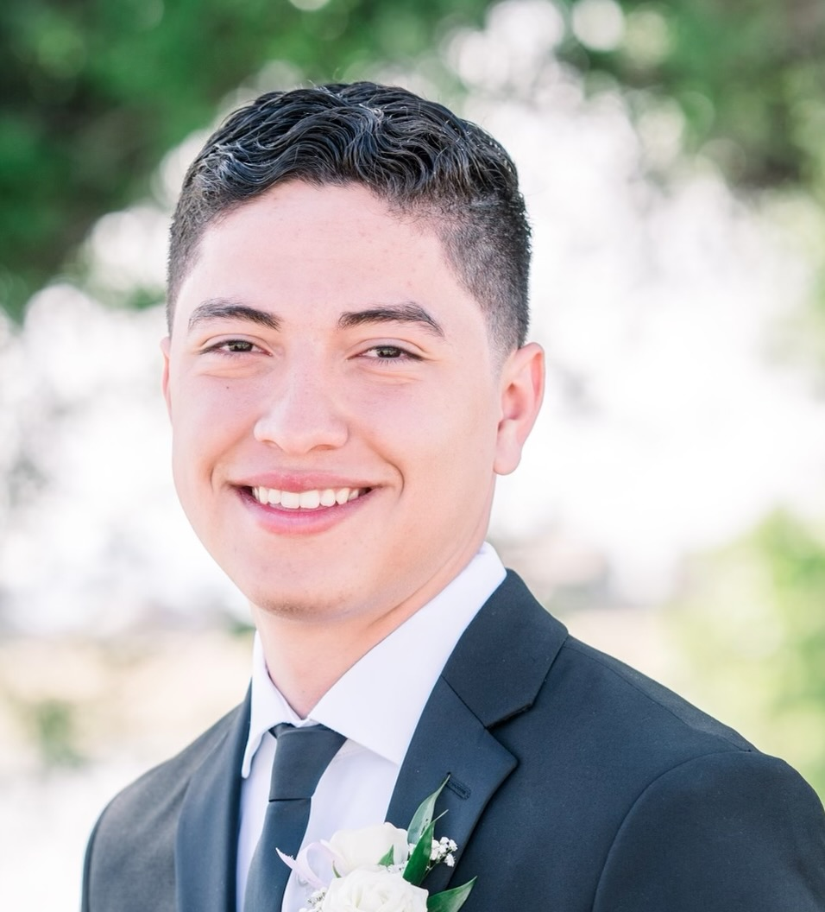
Hello! My name is Rafael Salcedo, a second year Computer Science Major from Cal Poly.
This website is a quick portfolio that lays out my biggest hands-on projects. I have more passion projects that are honorable
mentions. I would be more than glad to talk about said projects upon inquiry.
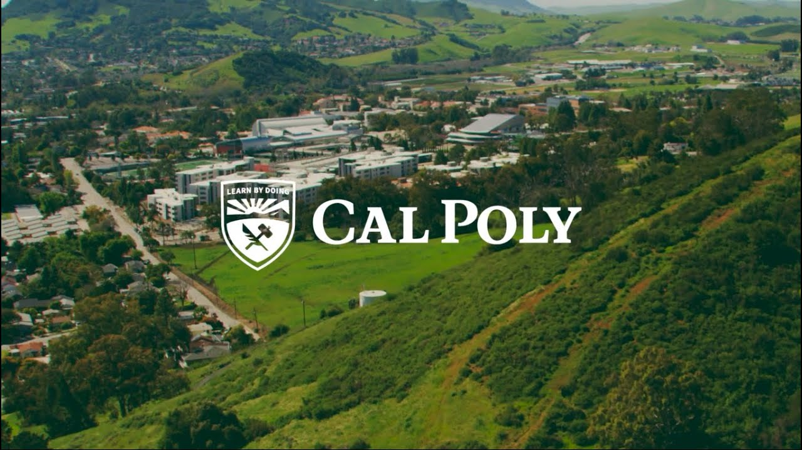
Currently I am pursuing a bachelor's degree in Computer Science at Cal Poly SLO.
Most of my experience currently comes from clubs and laboratories on campus.
My knowledge in computer science includes working on embedded systems such as Systemboards, RasberryPi, and LattePanda.
However, most of my time has been dedicated to full stack development of web applications. At this point, Django has been my go-to framework.
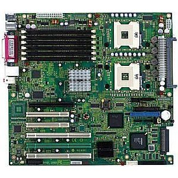
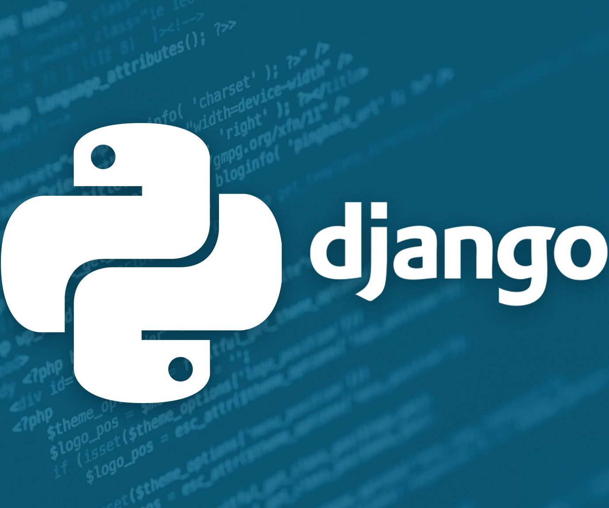
Things that I have been learning as a hobby include cloud engineering with AWS
and video game development with Roblox Studio.
Although I don't have a presentable project for these two areas, I always love to discuss my experiences within them.
Cal Poly CubeSat Laboratory, AKA PolySat, is an on campus research lab.
I am a part of the software team and responsible for various software components for our newest launch.
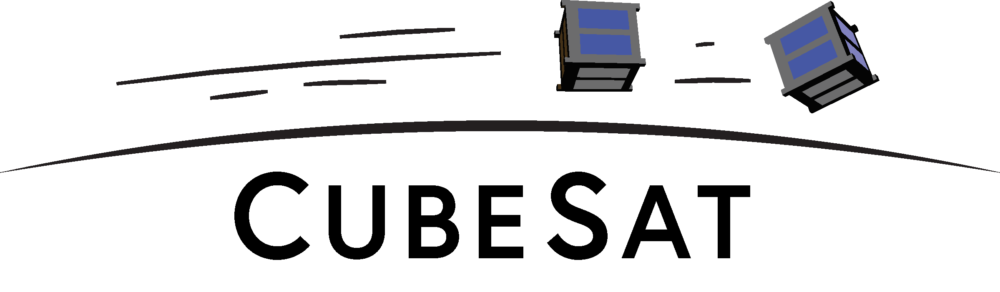
SAL-E will be launched Fall 2025, which means that we've already gotten a lot done, but there is still lots more to do.
The things I have done include updating the core processes on our Systemboard under our Linux Kernel.
These processes include Watchdog, Satcomm, and Clock-Sync. I've also programmed kernel drivers to recognize devices.
For testing I have also emulated the processes on my virtual machine to compare expected outputs.
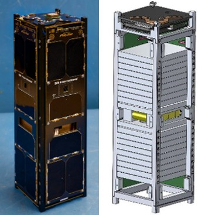

I designed and programmed the CARP payload, which interfaces with two chips to collect radiation data.
All the core-processes including my payload process use C as the main programming language.
Since I am communicating between two master devices,
I learned to use a set of custom communication protocols involving I2C, SPI, and UART.
As all the processes on the SystemBoard run concurrently, I also manage inter-process communication.
This is usually done with our custom libraries that I quickly mastered.
Due to the International Traffic in Arms Regulation (ITAR), I can't disclose all the details nor images on these projects.
The Cal Poly Robotics Club has several multi-disciplinary projects including an autonomous vessel.
As one of the two people working on the software for the vessel, I have done a lot from ranging from embedded software
to creating a web app.
As we lacked members with eletrical engineering experience, I have also dabbled quite a bit in it for this project.
However, I won't be focusing on that here.
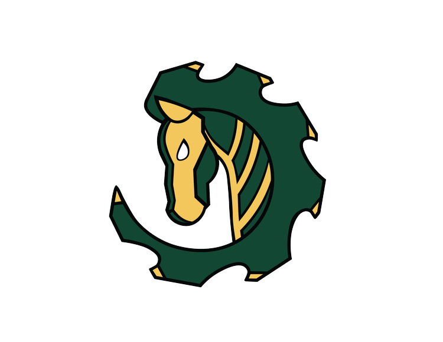
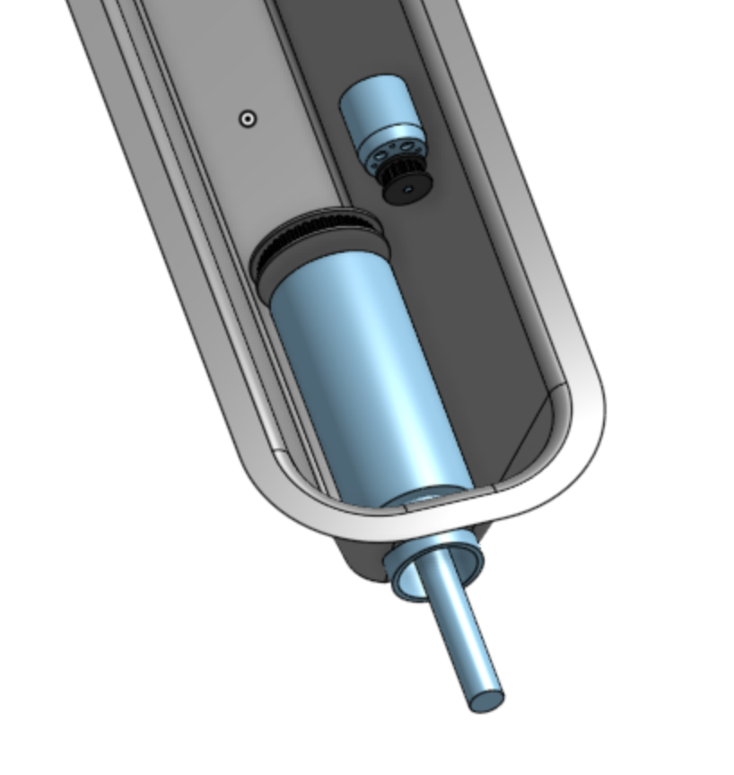
The vessel first needed manual controls, which is achieved over LoRa Radio.
The radio on the boat uses our custom data transfer protocol to communicate a radio hooked up to a computer.
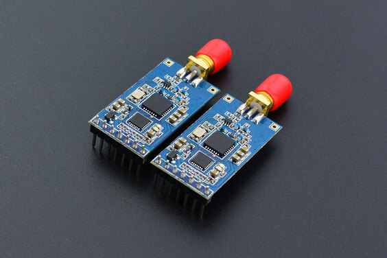
As bytes are sent across the radios, I programmed the protocol to encode and decode bytes by using Python.
I also used protocol buffers as our data format, which allows us to interpret those bytes as
commands or collected sensor data that we could then send to NOAA National Centers for Enviromental Engineering.
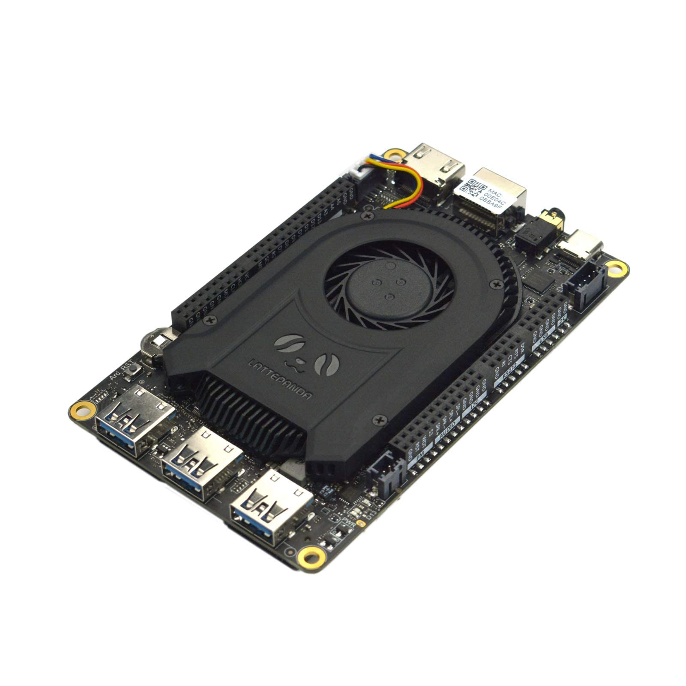
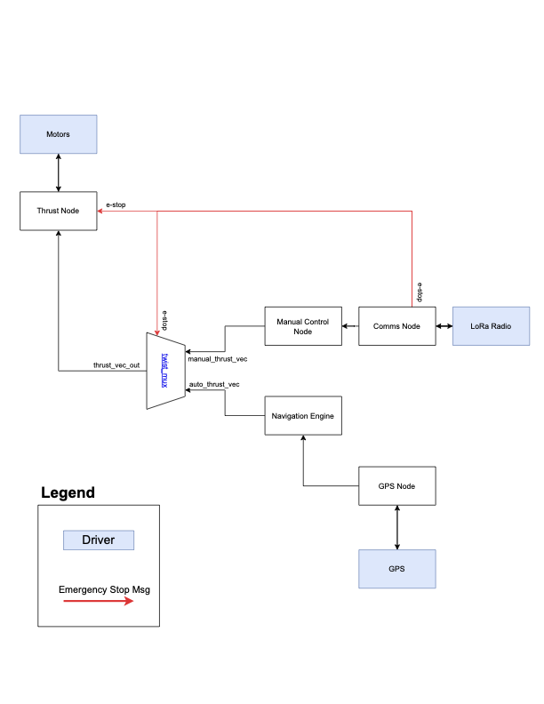
We use a LattePanda as microcontroller that manages everything from the motors to the instruments and sensors.
The LattePanda is programmed to master over a GPS and radio with UART.
I implemented ROS2 Nodes to communicate across the software processes.
This is also what the radio uses as it is suscribed to nodes that tell it what to send
and publishes what it recieves.
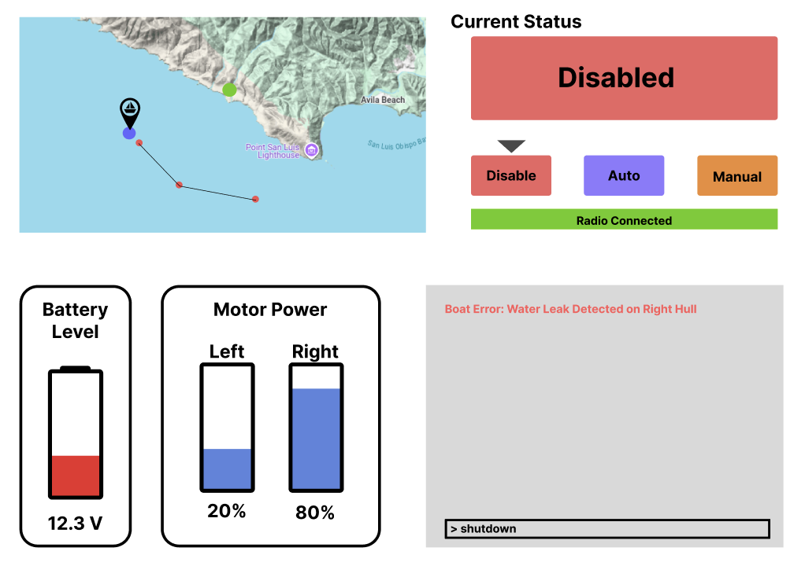
I also programmed a web app for manual control of the vessel.
I display all the vital vessel info and interface user commands via frontend.
The backend updates the info and actually sends commands via radio.